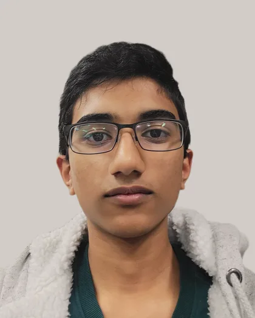

ModAnatomy
I lead CAD and mechanical design for models of the human body. My main project is a manually actuated heart, using pistons, tubing, and one-way valves to make cardiac mechanics easier to see.
I'm a student at TAMS, spending my time between microbiology, mechanical design, and code. I like making things I can build, test, and learn from.

I lead CAD and mechanical design for models of the human body. My main project is a manually actuated heart, using pistons, tubing, and one-way valves to make cardiac mechanics easier to see.
A site I co-developed to help students explore historical UNT course and instructor grade distributions before registering.
I helped build the event's app and website, and worked on venue selection, presenter recruitment, and company outreach.
Curious about how things work
I care about how something looks as much as whether it works, whether that's a heart model or a line of code.
I'm a senior at the Texas Academy of Mathematics and Science. In Dr. Rohan Balakrishnan's lab at the University of North Texas, I study fungi and bacteria and contribute to ongoing microbiology research.
I like the overlap between biology and engineering: things you can build, test, and watch fail in ways that teach you something. Lately, I've also been interested in how AI could help with microbiology and biotech.
Community & leadership
A few other places I spend my time.
A project, a question, or just a hello. I'd love to hear it.
akhil.tumati@gmail.com ↗